Decathlon Yestalgia
Captures desktop
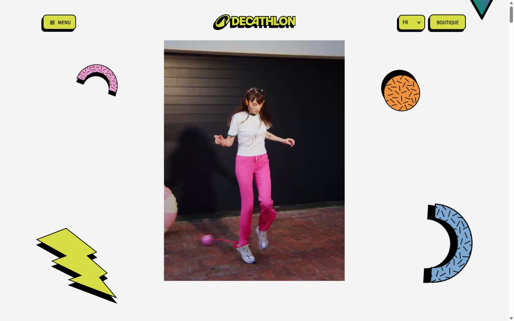

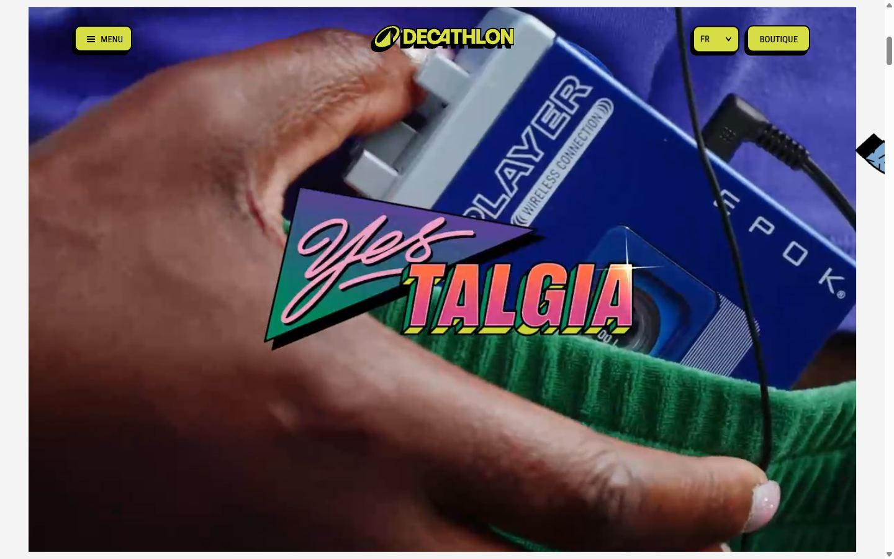
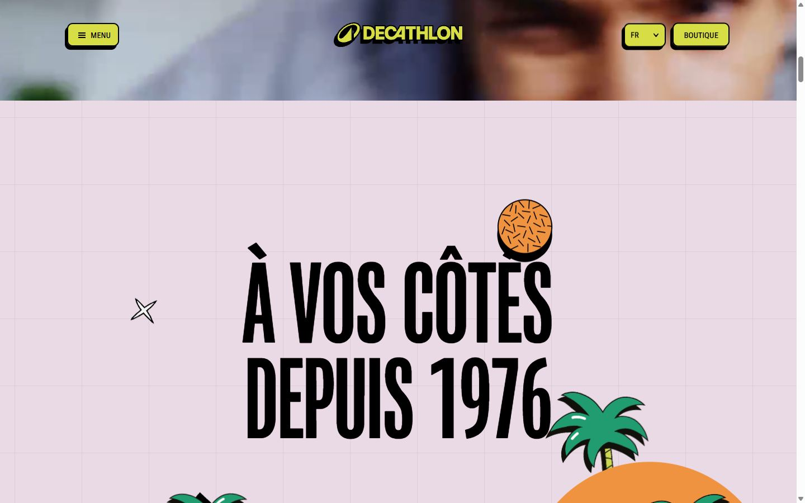
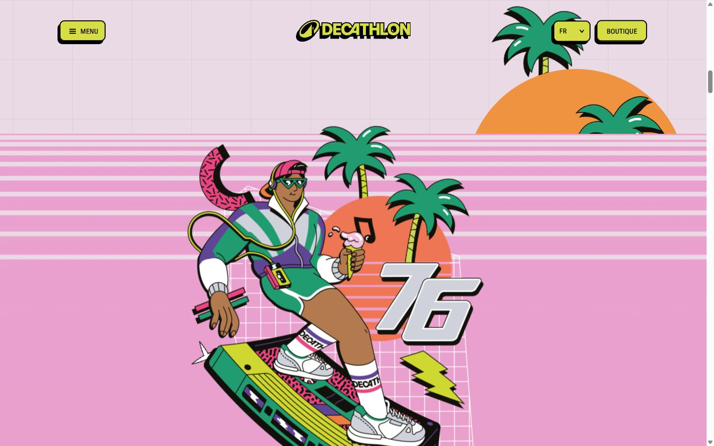
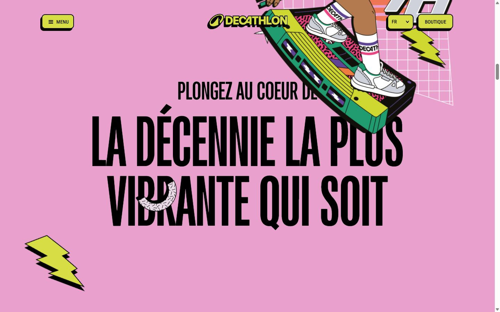
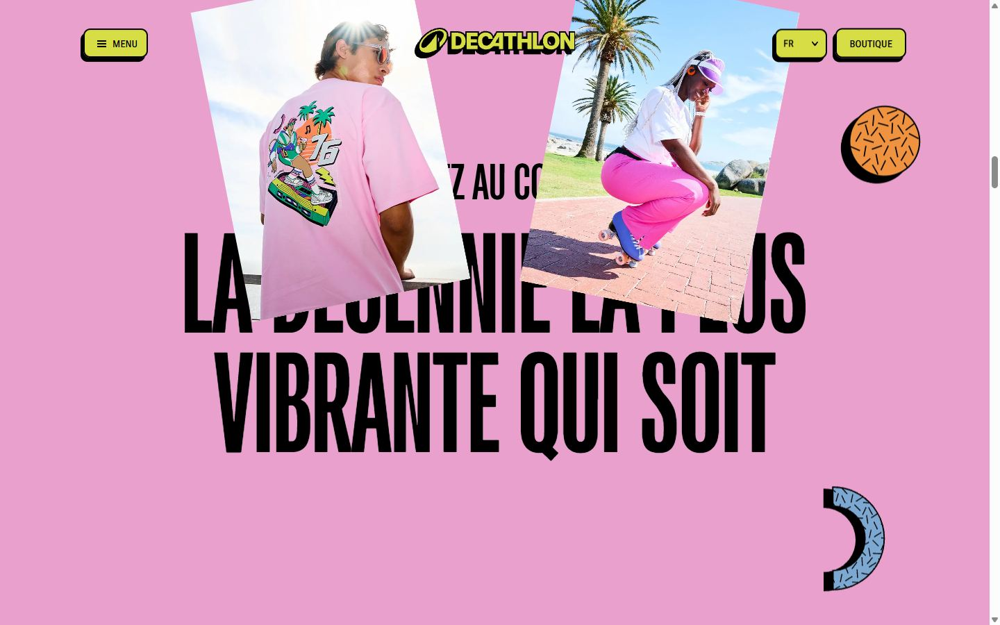
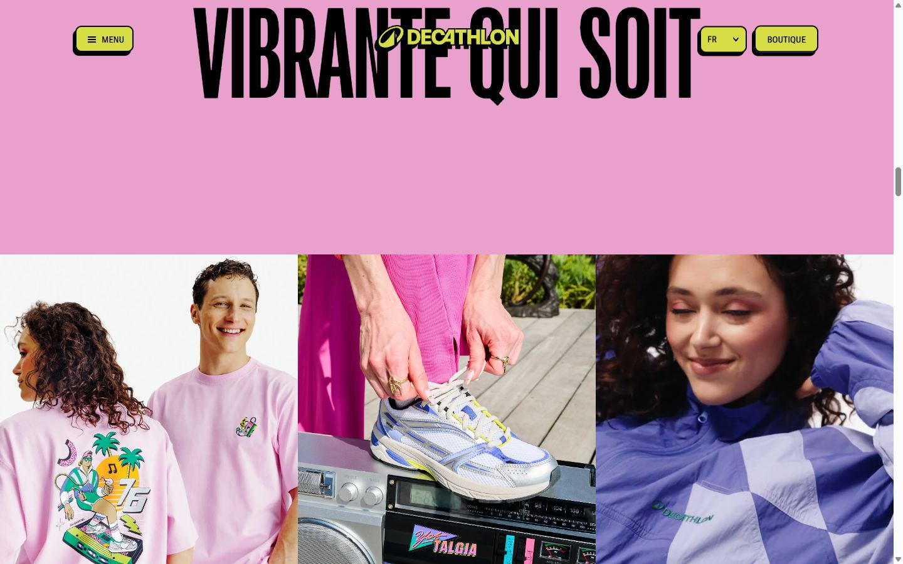
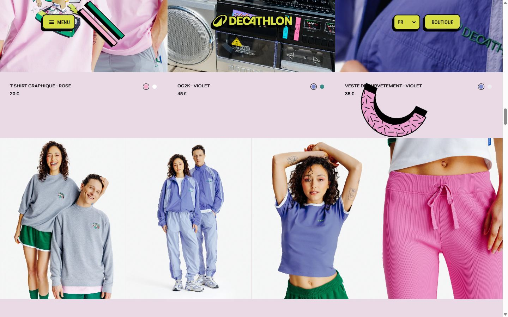
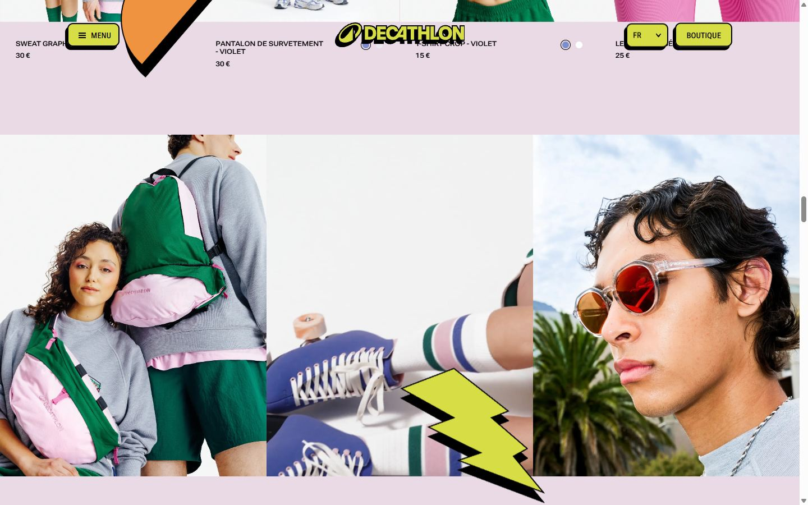
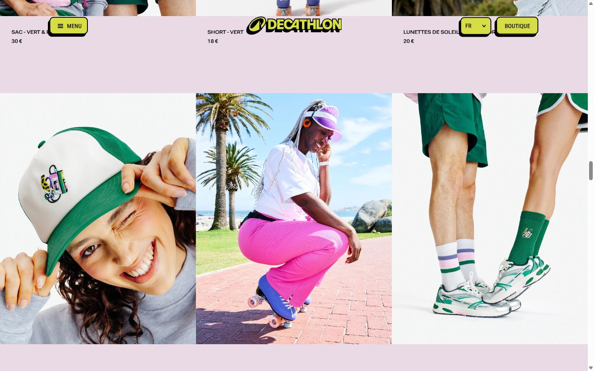
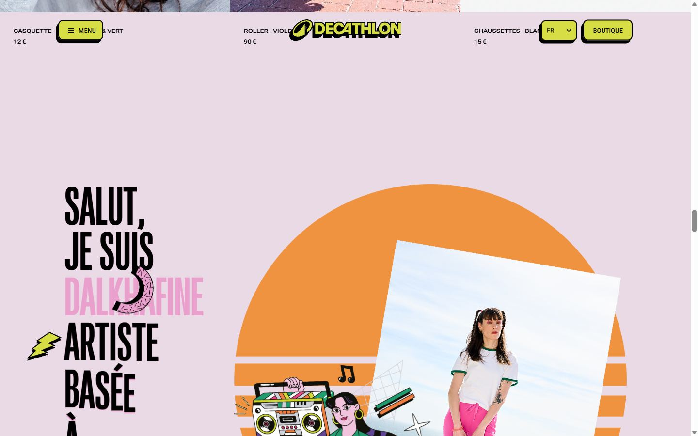
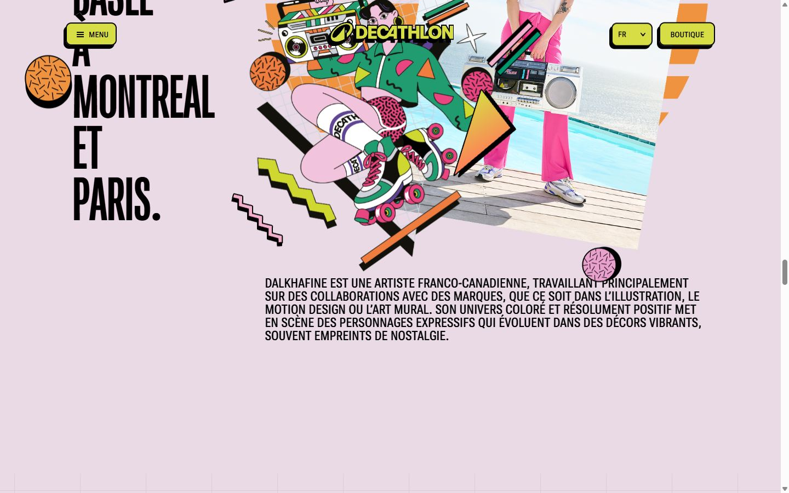
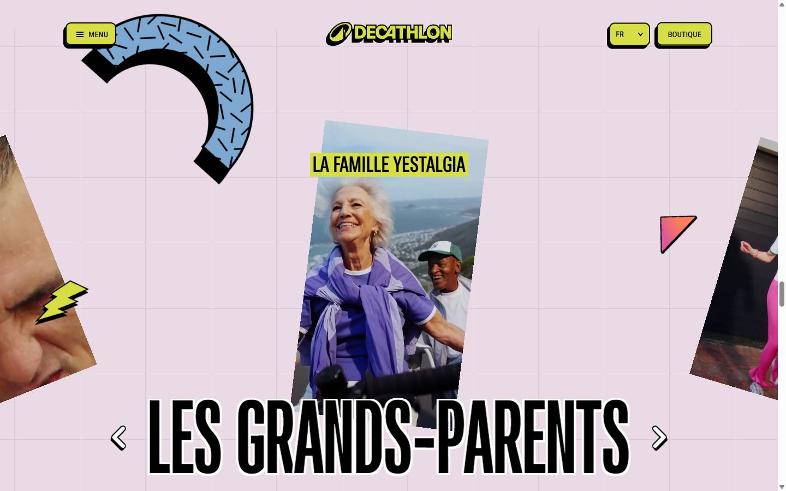
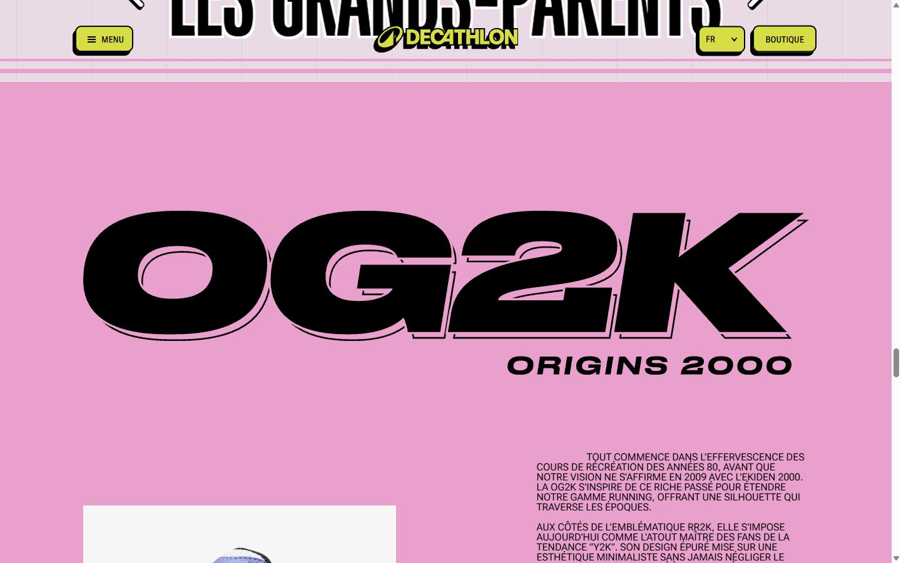
Pages internes

Mobile
Stack détectée
GSAP, Lenis, Rive, ScrollTrigger, SplitText/SplitType, Swiper, Swup, Virtual scroll, WebGL, WordPress
Versions : GSAP 3.11.0 · Three.js r?
Design tokens
Couleurs (fonds, pondérées par surface)
#e9dae6 · #eaa0cd · #f1f3ed · #f4f4f4 · #d7dd44 · #000000
Couleurs de texte
#000000 · #f09341 · #eaa0cd · #e9dae6 · #ffffff · #7ca8d2 · #d7dd44 · #00966e
Polices utilisées (par volume de texte)
Roboto Flex
Fichiers de police chargés
Typographie
| Élément | Police | Taille | Graisse | Interligne | Interlettrage | Casse |
|---|---|---|---|---|---|---|
| h1 | "Roboto Flex", sans-serif | 16px | 400 | 24px | normal | none |
| p | "Roboto Flex", sans-serif | 12px | 600 | 12px | normal | uppercase |
| a | "Roboto Flex", sans-serif | 16px | 400 | 24px | normal | none |
| button | "Roboto Flex", sans-serif | 14px | 535 | 11.9px | normal | uppercase |
| li | "Roboto Flex", sans-serif | 16px | 400 | 24px | normal | none |
| body | "Roboto Flex", sans-serif | 16px | 400 | 24px | normal | none |
Échelle des tailles de texte
201.6px (126) · 110px (102) · 187.2px (84) · 12px (52) · 72px (32) · 14px (12) · 16px (12) · 14.4px (4) · 24px (1) · 40px (1)
Arrondis
10px
Transitions CSS fréquentes
Points de rupture (media queries)
1024px · 1023px · 768px · 1400px · 640px · 1680px · 1399px · 1200px
Animations CSS (@keyframes)
swiper-preloader-spin, spinner, ringRotate
Variables CSS (:root)
--wp--preset--aspect-ratio--square: 1; --wp--preset--aspect-ratio--4-3: 4/3; --wp--preset--aspect-ratio--3-4: 3/4; --wp--preset--aspect-ratio--3-2: 3/2; --wp--preset--aspect-ratio--2-3: 2/3; --wp--preset--aspect-ratio--16-9: 16/9; --wp--preset--aspect-ratio--9-16: 9/16; --wp--preset--color--black: #000000; --wp--preset--color--cyan-bluish-gray: #abb8c3; --wp--preset--color--white: #ffffff; --wp--preset--color--pale-pink: #f78da7; --wp--preset--color--vivid-red: #cf2e2e; --wp--preset--color--luminous-vivid-orange: #ff6900; --wp--preset--color--luminous-vivid-amber: #fcb900; --wp--preset--color--light-green-cyan: #7bdcb5; --wp--preset--color--vivid-green-cyan: #00d084; --wp--preset--color--pale-cyan-blue: #8ed1fc; --wp--preset--color--vivid-cyan-blue: #0693e3; --wp--preset--color--vivid-purple: #9b51e0; --wp--preset--gradient--vivid-cyan-blue-to-vivid-purple: linear-gradient(135deg,rgb(6,147,227) 0%,rgb(155,81,224) 100%); --wp--preset--gradient--light-green-cyan-to-vivid-green-cyan: linear-gradient(135deg,rgb(122,220,180) 0%,rgb(0,208,130) 100%); --wp--preset--gradient--luminous-vivid-amber-to-luminous-vivid-orange: linear-gradient(135deg,rgb(252,185,0) 0%,rgb(255,105,0) 100%); --wp--preset--gradient--luminous-vivid-orange-to-vivid-red: linear-gradient(135deg,rgb(255,105,0) 0%,rgb(207,46,46) 100%); --wp--preset--gradient--very-light-gray-to-cyan-bluish-gray: linear-gradient(135deg,rgb(238,238,238) 0%,rgb(169,184,195) 100%); --wp--preset--gradient--cool-to-warm-spectrum: linear-gradient(135deg,rgb(74,234,220) 0%,rgb(151,120,209) 20%,rgb(207,42,186) 40%,rgb(238,44,130) 60%,rgb(251,105,98) 80%,rgb(254,248,76) 1; --wp--preset--gradient--blush-light-purple: linear-gradient(135deg,rgb(255,206,236) 0%,rgb(152,150,240) 100%); --wp--preset--gradient--blush-bordeaux: linear-gradient(135deg,rgb(254,205,165) 0%,rgb(254,45,45) 50%,rgb(107,0,62) 100%); --wp--preset--gradient--luminous-dusk: linear-gradient(135deg,rgb(255,203,112) 0%,rgb(199,81,192) 50%,rgb(65,88,208) 100%); --wp--preset--gradient--pale-ocean: linear-gradient(135deg,rgb(255,245,203) 0%,rgb(182,227,212) 50%,rgb(51,167,181) 100%); --wp--preset--gradient--electric-grass: linear-gradient(135deg,rgb(202,248,128) 0%,rgb(113,206,126) 100%); --wp--preset--gradient--midnight: linear-gradient(135deg,rgb(2,3,129) 0%,rgb(40,116,252) 100%); --wp--preset--font-size--small: 13px; --wp--preset--font-size--medium: 20px; --wp--preset--font-size--large: 36px; --wp--preset--font-size--x-large: 42px; --wp--preset--spacing--20: 0.44rem; --wp--preset--spacing--30: 0.67rem; --wp--preset--spacing--40: 1rem; --wp--preset--spacing--50: 1.5rem; --wp--preset--spacing--60: 2.25rem; --wp--preset--spacing--70: 3.38rem; --wp--preset--spacing--80: 5.06rem; --wp--preset--shadow--natural: 6px 6px 9px rgba(0, 0, 0, 0.2); --wp--preset--shadow--deep: 12px 12px 50px rgba(0, 0, 0, 0.4); --wp--preset--shadow--sharp: 6px 6px 0px rgba(0, 0, 0, 0.2); --wp--preset--shadow--outlined: 6px 6px 0px -3px rgb(255, 255, 255), 6px 6px rgb(0, 0, 0); --wp--preset--shadow--crisp: 6px 6px 0px rgb(0, 0, 0); --swiper-theme-color: #007aff; --swiper-preloader-color: black; --swiper-wrapper-transition-timing-function: var(--ease-power1-out); --swiper-navigation-size: 44px; --font-sans: "Roboto Flex",sans-serif; --font-mono: ui-monospace,SFMono-Regular,Menlo,Monaco,Consolas,"Liberation Mono","Courier New",monospace; --color-red-200: oklch(88.5% .062 18.334); --color-yellow-200: #d7dd44; --color-green-200: #00966e; --color-pink-100: #e9dae6; --color-pink-200: #eaa0cd; --color-black: #000; --color-white: #fff; --spacing: .25rem; --default-transition-duration: .15s; --default-transition-timing-function: cubic-bezier(.4,0,.2,1); --default-font-family: var(--font-sans); --default-mono-font-family: var(--font-mono); --spacing-outer-x-lg: 1.5rem; --spacing-outer-x-xs: .9375rem; --spacing-outer-y-lg: 8.125rem; --spacing-hview: 100svh; --color-orange: #f09341; --color-blue: #7ca8d2; --color-grey-300: #222827; --color-beige: #f1f3ed; --ease-out-power2: cubic-bezier(.215,.61,.355,1); --ease-power1-in: cubic-bezier(.55,.085,.68,.53); --ease-power1-out: cubic-bezier(.25,.46,.45,.94); --ease-power2-in: cubic-bezier(.55,.055,.675,.19); --ease-power2-out: cubic-bezier(.215,.61,.355,1); --ease-power2-in-out: cubic-bezier(.645,.045,.355,1); --ease-cubic-out: cubic-bezier(.215,.61,.355,1);
Structure de la home
Hauteur : 16862 px — 2412 nœuds DOM — canvas 7, vidéos 16, images 37
| # | Bloc | Hauteur | Titre | Médias |
|---|---|---|---|---|
| 1 | c-hero#block-6ae99f0ed3c15 .c-hero wp-block:h-hview relative h-lvh l | 1800 | Decathlon Yestalgia | 1 |
| 2 | section#block-6ae99f0ed7714 .overflow-clip bg-pink-100 | 3466 | 10 | |
| 3 | section#collection .c-products relative z-20 overflow-x-clip | 3022 | 33 | |
| 4 | section#dalkhafine .c-artist relative z-30 overflow-clip bg- | 1487 | 3 | |
| 5 | c-fancy-carousel#lookbook .c-fancy-carousel relative z-10 is-init | 900 | 11 | |
| 6 | c-og2k#og2k .c-og2k to-lg:py-16 relative z-40 bg-pink | 2242 | 11 | |
| 7 | c-footer-list#footerListblock6ae99f0eeeab7 .c-footer-list bg-beige relative z-10 py- | 3093 | 24 | |
| 8 | c-footer#block-6ae99f0ef3486 .c-footer h-hview relative z-10 overflow- | 900 | 2 |
Navigation : Mentions légales · Crédits
Boutons / CTA :
SEO
Plan des titres
Performance (mesure locale, Chrome headless, connexion non bridée)
Mobile
Fichiers
captures/ : arrivée, scroll desktop (1440×900), pleine page, pages internes, mobile (390×844 @2x) ; vidéo de scroll dans la release GitHub « videos » (lien en haut de fiche)page.html : DOM rendu · styles.css : CSS chargé · scripts/ : JS chargé (index dans _index.json) · shaders.glsl : shaders extraits · rea-bundle.json : analyse REA du bundle (chunks, routes, endpoints)